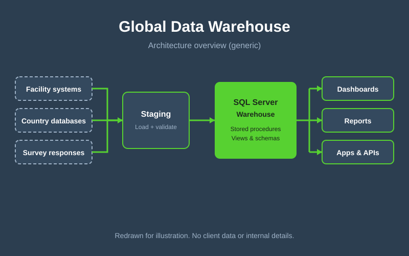

The problem
Operations span 49 countries and about 1,300 facilities, and each team needed reliable numbers. Data lived in separate systems with different structures, which made cross-country reporting slow and hard to trust. Survey results added another stream, collected in 27 languages and, at first, parsed by hand.
Approach
- One warehouse: built the SQL Server data warehouse as the shared source for reporting and analytics.
- Led the migration: planned and led the move to SQL Server, including schema changes, stored procedures and views written in T-SQL.
- Serve the apps: exposed the data to dashboards and ASP.NET / C# APIs, so web and mobile applications read from one consistent layer.
- Automate reporting: replaced manual data triage and report assembly with repeatable, scheduled processes.
Architecture

Generic redraw for illustration. It contains no client data, hostnames or internal schema.
Scale & outcome
The warehouse gave teams a single, consistent view of facility and survey data. Reports that once depended on manual assembly now draw on the same tested queries, and the survey dashboard and sentiment API plug into the same data.
Challenges & decisions
- Migrating without disruption: staged the move so live applications kept working while schemas and procedures changed.
- One schema, many countries: designed shared structures that handle different local data and 27 languages.
- Trust in the numbers: pushed business logic into versioned stored procedures and views so every report uses the same definitions.
What I'd do next
Add automated data-quality checks and alerting, incremental loads for faster refresh, and row-level access control by country.